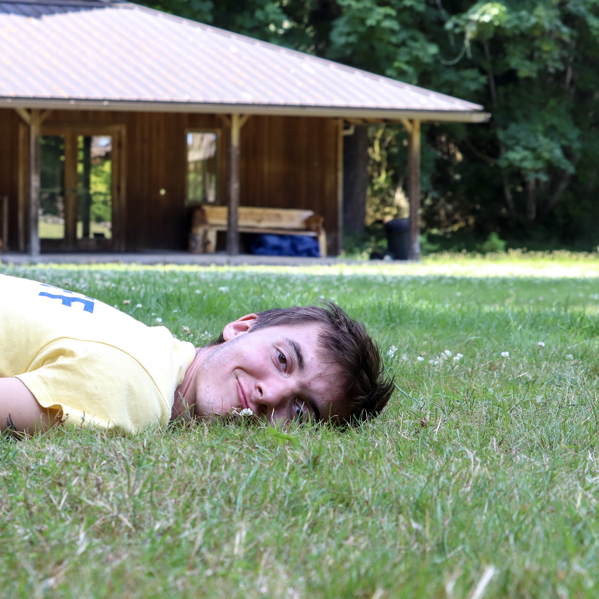

Who Am I?
Hello! My name is Ben McFarland. I am 19 years old and live in the Bend area in Oregon. I grew up in the Atlanta, GA metro area, and in Portland, OR. I have been coding as a hobby since middle school, and recently began to get a lot more serious to create a career out of this hobby. After high school in Portland, I went to Oregon State University as a Computer Science major for a year, until I decided to join a coding boot camp instead.

Education:
I graduated high school from Grover Cleveland High School in SE Portland, OR. I then went on to spend a year at Oregon State University studying computer science. After a year at OSU I joined a coding boot camp, Epicodus, online that started this October. I will gradute from Epicodus in May 2021.
Job Experience:
I have worked in retail for the past couple of years before the pandemic. Last summer I spent the summer as a full time camp counselor at Camp Namanu in Sandy, OR. I have also worked a general warehouse position for summers at Docufree Corporation in Roswell, GA.
Why Did I Join Epicodus?
Why did I join a boot camp? I have always enjoyed coding and computer programing, and I originally was going to get a degree in computer science for it. However once the pandemic began, I was not enjoying online college, especially becuase I was still paying for fully in-person classes. I then looked into other ways I could get a career in computer programming that wasn't online college. I found Epicodus and really liked what they offered. I liked the idea of using all of my freetime during the day to code and work with other aspiring programers! And I believed that it was a better option, especially with the state of the world today.
Hobbies and Skills
Some of my hobbies include:
- Listening and making music
- Hiking/camping
- Biking
- Photography
Some of my skills include:
- Familiar with HTML, CSS, C++ and Python
- Strong leadership skills
- Strong teamwork skills
- Clean, neat and orgonized
- Strong problem solving skills